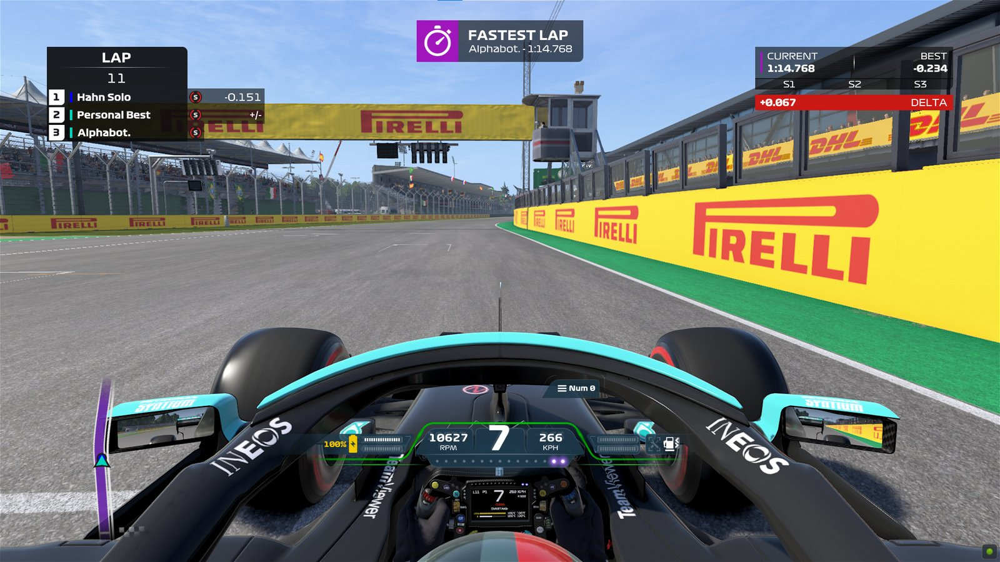
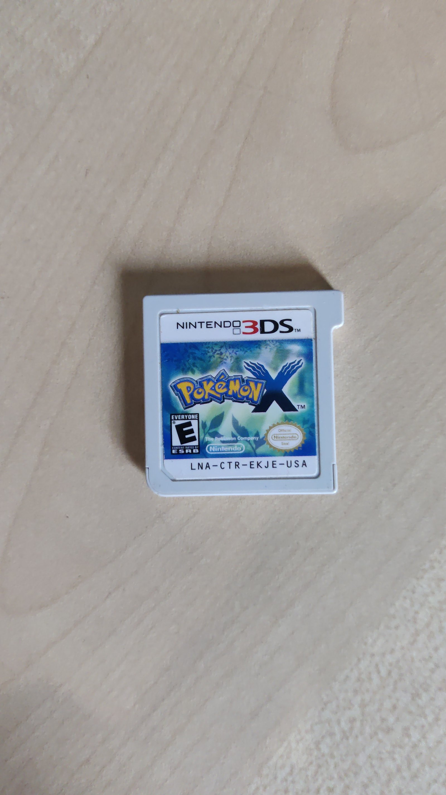
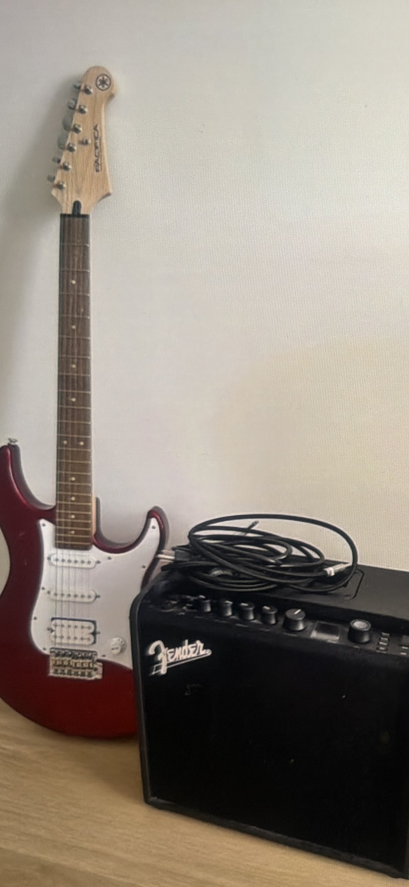
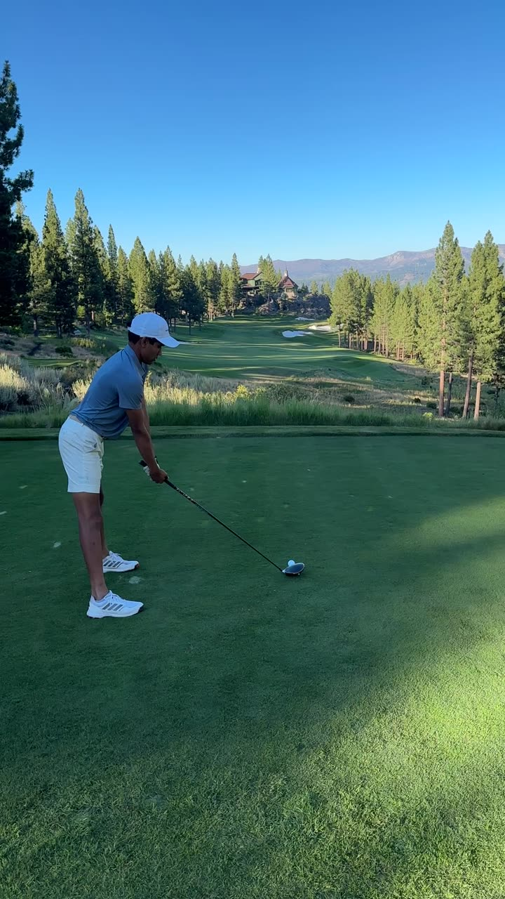
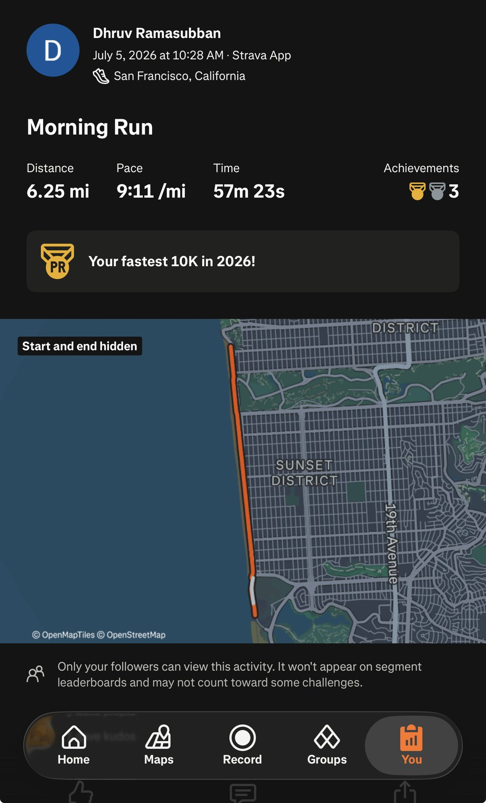

Present

F1 and sim racing2020 – presentGot into F1 in 2020, bought a wheel, ended up racing in online leagues and getting to top 800 in the world.read more →- Rubik's cube2016 – presentSub-18 on 3x3, sub-3 on 2x2, can solve blindfolded, and I was part of a world record team in 2020.read more →

Pokémon2013 – presentMy favorite franchise of all time. Every generation since 2013, Sapphire first, Pearl second, Swampert forever.read more →- WikipediaalwaysI can go for hours just reading everything and deep linking from one article to the next.read more →

Guitar2026 – presentJust picked it up this year on a brand new Yamaha Pacifica. Currently learning Everlong.read more →- Aviation2026 – presentI'm fascinated by aviation accidents and I vibecoded Blackbox, a knowledge graph of every crash on record.read more →

Golf2021 – presentStarted with my dad at a driving range. Still chasing the one good shot.read more →
Runningsince high schoolRan XC and track in high school, got insanely washed, getting back on the grind with two races coming up.read more →
Past
- Formula racing2025A year on the vehicle dynamics team, modeling tires so the car could turn faster.read more →
- Standup comedy2023 – 2024Did nine open mics around Berkeley and SF. Two of them went well.read more →
- Drones2024 – 2025Built and flew quads, then ran a workshop teaching students to make them fly themselves.read more →
- Scuba diving2022Got Open Water certified in the Andamans. Quietest hour of my life.read more →
- Tennis2014 – 2022Eight years of junior tennis. One decent forehand, zero backhand.read more →